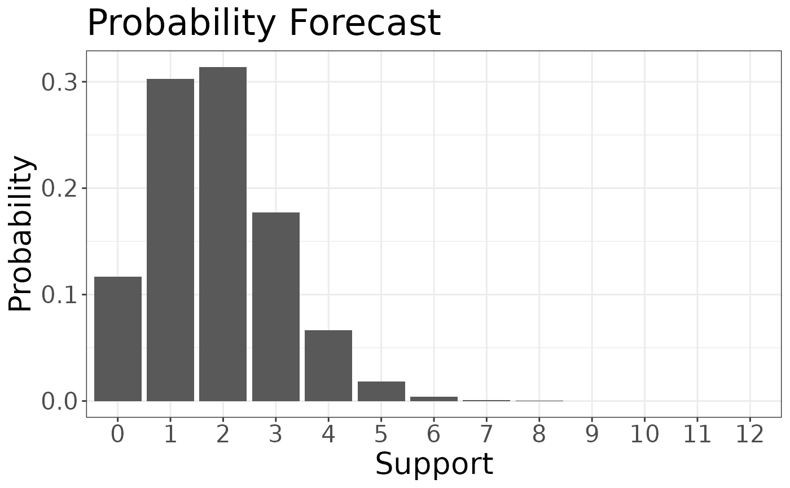

Computes the k-step ahead forecast (distributions) using the models in the coconots package.
Usage
# S3 method for class 'coco'
predict(
object,
k = 1,
number_simulations = 1000,
alpha = 0.05,
simulate_one_step_ahead = FALSE,
max = NULL,
epsilon = 1e-08,
xcast = NULL,
decimals = 4,
julia = FALSE,
...
)Arguments
- object
An object that has been fitted previously, of class coco.
- k
The number of steps ahead for which the forecast should be computed (Default: 1).
- number_simulations
The number of simulation runs to compute (Default: 1000).
- alpha
Significance level used to construct the prediction intervals (Default: 0.05).
- simulate_one_step_ahead
If FALSE, the one-step ahead prediction is obtained using the analytical predictive distribution. If TRUE, bootstrapping is used.
- max
The maximum number of the forecast support for the plot. If NULL all values for which the cumulative distribution function is below 1- epsilon are used for the plot.
- epsilon
If max is NULL, epsilon determines the range of the support that is used by subsequent automatic plotting using R's plot() function.
- xcast
An optional matrix of covariate values for the forecasting. If
NULL, the function assumes no covariates.- decimals
Number of decimal places for the forecast probabilities
- julia
if TRUE, the estimate is predicted with julia (Default: FALSE).
- ...
Optional arguments.
Value
A cocoForecastCollection object (list of cocoForecast objects, one per step ahead). Use summary() to obtain a data frame of point forecasts (mean, median, mode) and prediction intervals. Individual steps are accessible via forecast[[i]].
Details
Returns forecasts for each mass point of the k-step ahead distribution for the fitted model. The exact predictive distributions for one-step ahead predictions for the models included here are provided in Jung and Tremayne (2011), maximum likelihood estimates replace the true model parameters. For k>1 forecast distributions are estimated using a parametric bootstrap. See Jung and Tremanye (2006). Out-of-sample values for covariates can be provided, if necessary.
for k > 1
References
Jung, R.C. and Tremayne, A. R. (2011) Convolution-closed models for count time series with applications. Journal of Time Series Analysis, 32, 3, 268–280.
Jung, R.C. and Tremayne, A.R. (2006) Coherent forecasting in integer time series models. International Journal of Forecasting 22, 223–238
Examples
length <- 500
pars <- c(1, 0.4)
set.seed(12345)
data <- cocoSim(order = 1, type = "Poisson", par = pars, length = length)
fit <- cocoReg(order = 1, type = "Poisson", data = data)
forecast <- predict(fit, k=1, simulate_one_step_ahead = FALSE)
plot(forecast[[1]]) #plot one-step ahead forecast distribution
